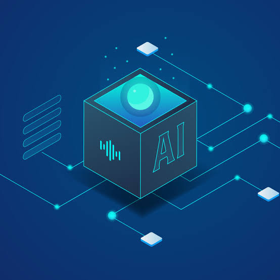
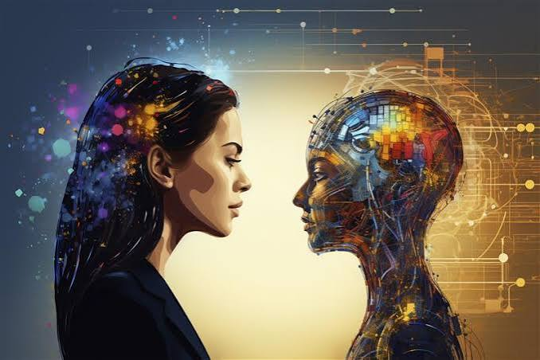

201 - 887 - 0384
FOUNDATION PORTFOLIO · 2026
Hi, I’m Umair Kazi.
AI Engineering Student at Penn State
Learning · Building · Growing
01 / INTRODUCTIONSCROLL TO EXPLORE ↓
CONTACT INFORMATION
Let’s connect
01 — PROFESSIONAL IDENTITY
About me
01
Who I am
becoming
My name is Umair, and I am an Artificial Intelligence Engineering major at Pennsylvania State University. I was interested in AI ever since the release of ChatGPT in 2022 when I used it to give me ideas for projects that I could work on in high school. Since then, I have been teaching myself programming fundamentals and how AI systems work behind the scenes. I also wish to create projects where I can apply my knowledge to turn it into something real and meaningful.
Currently, I am focused on learning Python fundamentals and machine learning basics. I am interested in using AI to provide meaningful services to people who need it, and I want to find ways where AI can be used to solve everyday problems.
Outside of academics, I like to create coding projects of my own and teach others about things I am passionate about through my jobs as a coding instructor and math instructor.
02 — CAREER EXPLORATION
Paths I’m exploring
Add two or three target career pathways. Name real role titles and organizations.
AI/ML Engineer
Why it fits
As an AI Engineering major at Penn State who is building Python and machine-learning skills, I want to use what I learn to build useful tools that can be applied to solve real world issues.
AI-related change
Gen AI tools are speeding up how teams create AI applications. However, engineers still need to test whether those systems are accurate, reliable, and safe to use.
Question to investigate
What skills do AI/ML engineers need to turn a working prototype into a reliable product?
Organization / programOpenAI, Anthropic, Nvidia, IBM
AI/ML Research Support Intern
Why it fits
An internship would let me apply what I’m learning in AI Engineering to real research tasks and learn how AI/ML teams work.
AI-related change
AI research uses machine learning to work with large datasets, including images, video, text, and sensor data. Preparing and checking that data is an important part of building useful models.
Question to investigate
What Python and other data skills should I build to contribute to AI/ML research?
Organization / programPenn State Applied Research Laboratory (ARL) — University Park
03 — SKILLS & SOFT-SKILL MAP
How I work with AI
Critical thinking
I’ve used ChatGPT to brainstorm project ideas, but an idea is only useful if it fits a real goal. I would rather build the skills to evaluate and test AI suggestions before relying on them.
HUMAN IN THE LOOP
I choose the goal and decide whether an AI response makes sense in the context.
Empathy & emotional intelligence
As a coding and math instructor, I adjust how I explain things based on what a student needs. AI might help me come up with examples, but I need to choose ones that make sense for the learner.
HUMAN IN THE LOOP
I notice when someone is confused, and adjust my explanation accordingly.
Adaptability & continuous learning
I’m building my Python and ML foundations by taking multiple courses. I also create coding projects to continue learning and apply new ideas.
HUMAN IN THE LOOP
I choose what to learn next and practice until I understand it.
Social influence & collaboration
Teaching coding and math gives me practice helping others work through problems and explaining ideas clearly.
HUMAN IN THE LOOP
AI can offer suggestions, but I’m responsible for making sure my help is useful to the person.
04 — SELECTED WORK
Curated artifacts
ARTIFACT 01APPLIED AI EVIDENCE

Exploring AI’s Future in Computer Science and AI Engineering
I conducted an AI interview to explore possible changes to the fields of computer science and AI engineering over the next five to ten years. I considered three predictions: engineers may spend more time directing and verifying AI-generated code; AI engineers may focus more on integrating large language models and adapting models to specific tasks; and testing for safety, bias, and failure may become a more important specialty as AI enters fields such as health care, finance, and infrastructure. I also identified judgment, communication, and rapid learning as skills I’ll need as a future AI Engineer. My reflection describes both my excitement about studying AI as it develops and my concern about how quickly the field could change.
ARTIFACT 02EMOTIONAL OR INTRINSIC SELF

Comparing Human Empathy and AI Responses
I compared an AI-generated response with my own response to a mock scenario about discovering on Instagram that my friend group went to the movies without me. I described feeling small, invisible, and unsure whether I was a real friend or just someone who was convenient to have around. Claude’s response acknowledged how the situation felt painful and reminded me that one missed invitation does not prove my friends meant to exclude me. In my response, I also recognized the hurt, then connected it to a similar experience I had when my friends went camping without me. Comparing the responses showed me that AI can offer thoughtful reassurance, but a personal experience between two humans can make a response feel more connected and personal. This activity helped me think about how empathy involves listening, sharing carefully, and supporting someone without jumping to conclusions.
05 — ADDITIONAL CURATED ARTIFACTS
More ways I grow
Selected work, professional values, and plans for what I want to learn and do next.
ARTIFACTS 03 + 04
Learning through practice
ARTIFACT 03ADAPTIVE SELF

Developing Self-Awareness and Adapting My Habits
I did an exercise about how the brain fills in for the lack of information and how biases work in our thinking. I analyzed predictive processing, confirmation bias, and status quo bias, along with a situation in my life where I mistakenly thought that my friend didn't like me after one interaction in the hallway. I also changed a behavioral pattern by creating a plan to read 5 pages of In Cold Blood daily and leave my phone aside to avoid distractions during reading (this is reading material for English 15S).
ARTIFACT 04SOCIAL SELF

Building Connections Through Collaboration
As a board member of the Muslim Student Association at Penn State Lehigh Valley, I have had opportunities to network with students from other colleges and work with them for events. One such event was organizing a Friendsgiving potluck, which involved students from Penn State Lehigh Valley, Lehigh, DeSales, Muhlenberg, Lafayette, and Moravian. Planning the event involved communicating and coordinating to create an atmosphere where students could meet and socialize. From this, it is clear that being a leader involves not only doing one’s part of the job, but creating relationships and getting people together towards a common objective.
06 — ETHICS & RESPONSIBLE AI
Principles I bring to AI
My Ethical Stance on AI and Emotional Support
Ethical issues arise around the provision of emotional support through AI chatbots. Although these AI programs can provide quick, easy and accessible support, an issue may occur where users become dependent on the AI instead of receiving real human interaction. Therefore, there is a conflict between increasing accessibility to emotional support, and ensuring users are not deceived into believing an AI has real human understanding. Chatbots could also cause confirmation bias in users of the system, creating an unbalanced response. This could be harmful to individuals in need. It is very important that users of AI chatbots for emotional support strike a balance between the ease of support and the potential privacy and mental health issues (Volpato et al., 2025).
As an AI engineer in the future, I believe AI should only be used to support humans, rather than replace them. Designers should consider the effect their design has on users. In particular, AI designed to interact with humans on an emotional level should be clear in it’s limitations. It should not be seen by users as having a full understanding of human emotions, or professional advice.
When using AI, I will use AI chatbots to help me organise my thoughts, or gain new perspectives and general knowledge. However, I will not consider AI as a substitute for real human relationships, or professional emotional support. Overall, advances in technology should allow people to live better lives, but shouldn’t devalue the importance of human relationships.07 — INTERNSHIP & JOB-SEEKING TOOLKIT
Preparing to connect
Indroduction/ Pitch
Hi, I'm Umair, a Penn State student studying AI Engineering. I'm developing my skills in programming, data analysis, and AI. I'm looking for internships or hands-on opportunities where I can gain experience, learn from others, and contribute my problem-solving skills and willingness to learn.
Informational-interview questions for OpenAI
- What technical skills or projects would make a college student stand out when applying for an AI Engineering internship at OpenAI?
- How is the rapid development of AI changing the day-to-day work of engineers at OpenAI?
- 1. What advice would you give a freshman studying AI Engineering who hopes to earn an internship at OpenAI in the future?
My next 90 days
- Find and contact an AI Engineer or Penn State alumnus working in AI through LinkedIn. Ask about their career path and advice for students.
- Improve my LinkedIn profile by updating my headline, adding relevant courseworks, and creating an About Me section.
- Spend 3 days per week learning and practicing Python libraries, specifically NumPy, Matplotlib, and Pandas, through guided exercises and small coding projects.
- Build an academic planning tool that organizes class assignments, deadlines, and exams into a calendar, prioritizes upcoming work, and sends reminders
- Check LinkedIn and company career pages weekly for AI Engineering, software engineering, and data science internships, focusing on opportunities for Summer 2027
- Follow up with the person I contacted to request a short informational interview or apply to a relevant internship if I meet its requirements.
08 — GROWTH REFLECTION
What changed from August to November
As I reflect on this portfolio, I realize that my thinking about college, my career in the future, and artificial intelligence has become more focused. Initially, when I entered college as an AI Engineering major, all I thought about was getting good grades, learning technical skills, and eventually securing an internship. Although these were some of my initial goals, I have come to know that preparing for a career involves much more than academic performance.
In my Future of AI and Computer Science artifact, I have studied the impact that AI will have on engineering jobs in the next five to ten years. From this exercise, I learned that success in the field of technology will require more than just coding skills. Engineers will also have to learn to adapt to new tools, assess AI-generated results, and understand the implications of the systems they design. This is why I decided to develop my skills in Python, NumPy, Matplotlib, and Pandas while exploring various areas of AI.
In addition, my Adaptive Self artifact taught me about the influence of assumptions and cognitive biases on my decision-making process and about the importance of identifying weaknesses and working to improve them.
Through my Social Self artifact, I realized the importance of teamwork through my experience with Muslim Student Association and helping other students from other colleges come together. I learned that being a citizen or a leader entails making connections and giving back to your community.
The AI Ethics artifact made me realize that creating Artificial Intelligence has certain obligations. The main obligation is that AI should be helpful to humans and not replace valuable relationships that humans have with each other nor take away human decision-making capabilities.
Going forward, I would like to see my college education as an opportunity to gain both technical and social skills. I would like to work on projects, network with professionals, and even do internships. Being prepared for a career is not just about getting a job; it is about becoming a contributor.
09 — CREATIVE ELEMENT
A signature that feels like me

My Icon and Story
Tagline: Curious · Intentional · Forward
Origin story: This logo combines my initials with an orbit and star to represent me as an adult in the professional world. Each element of the logo represents a different aspect of me and the person I want to become. The initials establishes my identity, while the geometric design of the lettering reflects my interests in tech and engineering. The bronze orbit around the initials represents growth and my need to push forward, which symbolizes my willingness to always learn. The star represents curiosity, ambition, and my goals that I am always pushing forward to achieve.
The three words that make up my tagline are curiosity, intentionality, and forwardness. I value being curious because asking questions and being open to learning opens many doors and pushes me to learn more. I also believe that being intentional in the decisions I make are important because it affects my life and my professional career. As I enter the professional world in an increasingly automated workplace, I want to use these qualities to approach challenges with purpose and continue developing skills to solve those problems.
10 — PROFESSIONAL MATERIALS
Resume & profile
LinkedIn Profile
AI Engineering Major @ Pennsylvania State University
11 — TRANSPARENCY & ACADEMIC INTEGRITY
My AI process
Write a 150–250 word note describing how you used AI while preparing this portfolio.
01
Tools & tasks
I used Claude and ChatGPT to help me explore how AI might affect computer science and AI engineering, and to compare AI and human responses to an emotional scenario. I used them to organize ideas and improve clarity while working on assignments.
02
Choices & judgment
I treated the AI responses as suggestions rather than a finished response. I reviewed the responses and grammar, then chose what matched my assignment and perspective. For example, in Artifact 2, I compared Claude’s response with my own rather than presenting them as the same kind of empathy.
03
Correction & learning
Some AI response can sound polished but robotic and generic. When working on my assignments, I made sure the final assignment reflected my own ideas and experience, including my personal camping-trip example. I also considered whether the AI response made assumptions about my friends and appreciated that it left room for more than one explanation.